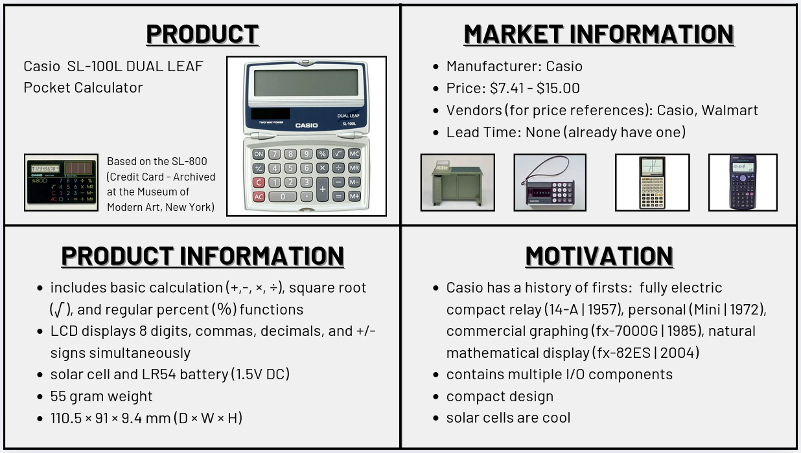

This device tear-down and analysis was performed and recorded by Daniel Bratu (dab755), a senior Computer Engineering undergraduate, in Spring 2025. It was executed as a part of the semester-long dissection project in Mississippi State University’s ECE-4724 Embedded Systems course under Dr. Vuk Marojevic.
Daniel has been digitally captured and provided in Figure 1 for reference.
Figure 1: Daniel Bratu
A CASIO SL-100L Dual Leaf Pocket Calculator was chosen as the subject of this dissection. The dissection proposal quad chart created as a part of the selection effort is showcased in Figure 2 for archival purposes.

Figure 2: Dissection Proposal Quad Chart
The following subsections cover much of the same information as the quad chart in additional detail.
The SL-100L is a basic folding calculator with no scientific functions and limited memory operations; it is capable of standard mathematical operations using only a single binary or unary operator at a time. It has two power sources: a button cell battery and solar cells. The calculator utilizes a 8-digit 7-segment LCD for the display.
A calculator was chosen for this dissection because calculators as a whole are readily available and widely used devices. Additionally, basic non-scientific, non-graphing calculators are textbook examples of embedded systems: they are non-programmable, application-specific devices that use several user-facing input/output components, such as LCDs and keypads. Furthermore, studying the inner-workings of a calculator serves as an excellent entry point into embedded systems, as they typically lack complex or confusing circuitry, thus allowing the person performing the dissection to focus on understanding the embedded applications without necessarily being overwhelmed by the device’s underlying electrical implementation.
Next: —► Product Market —►